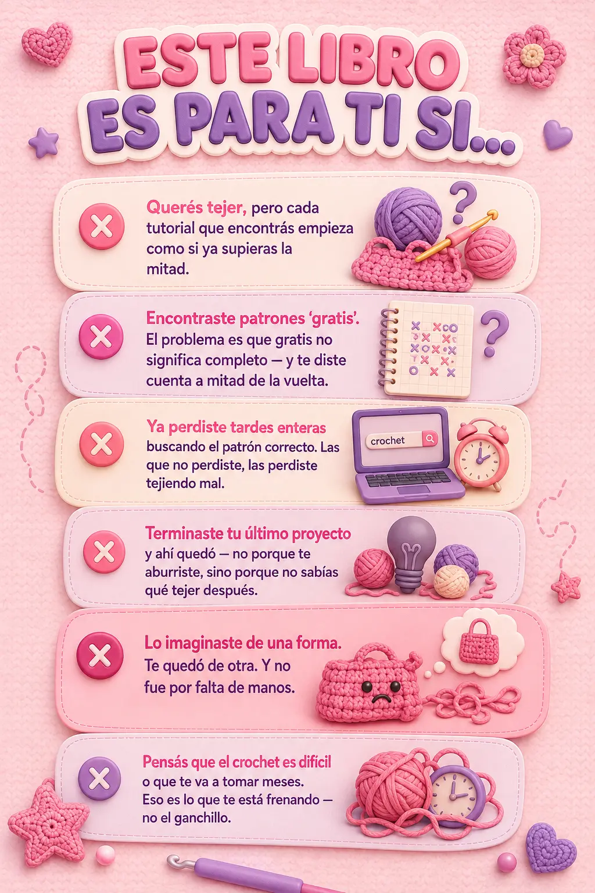
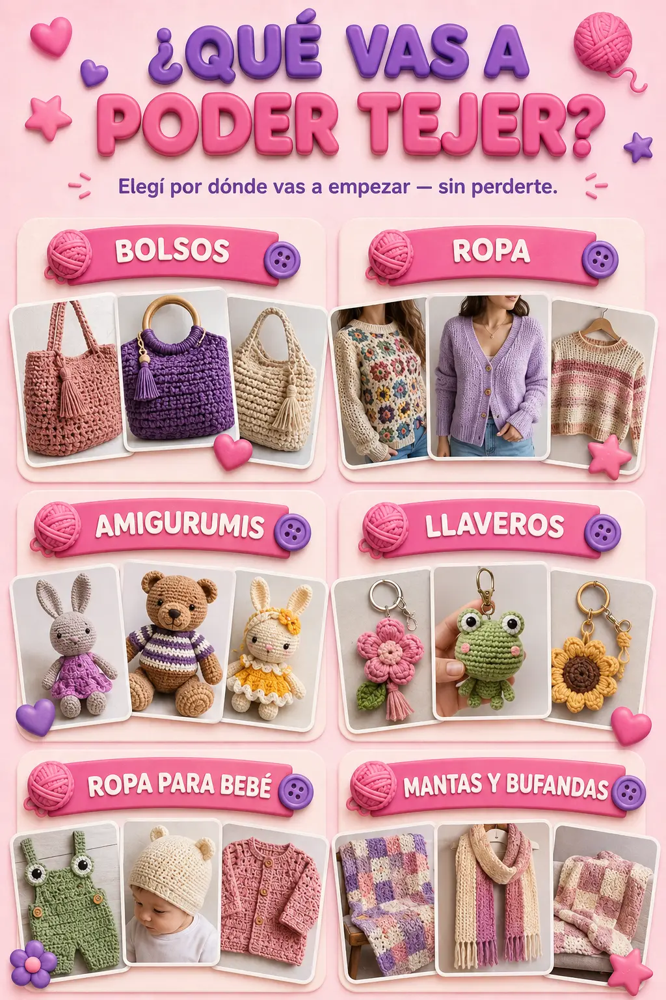
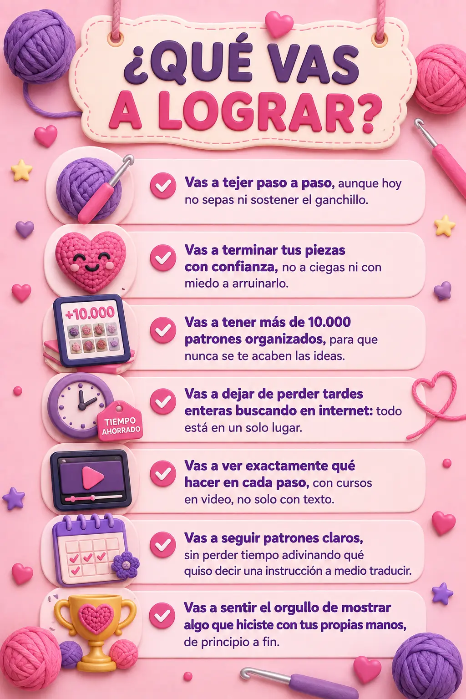
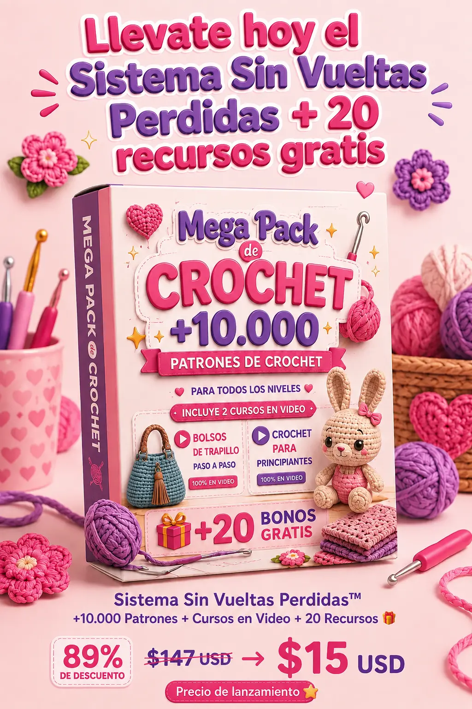
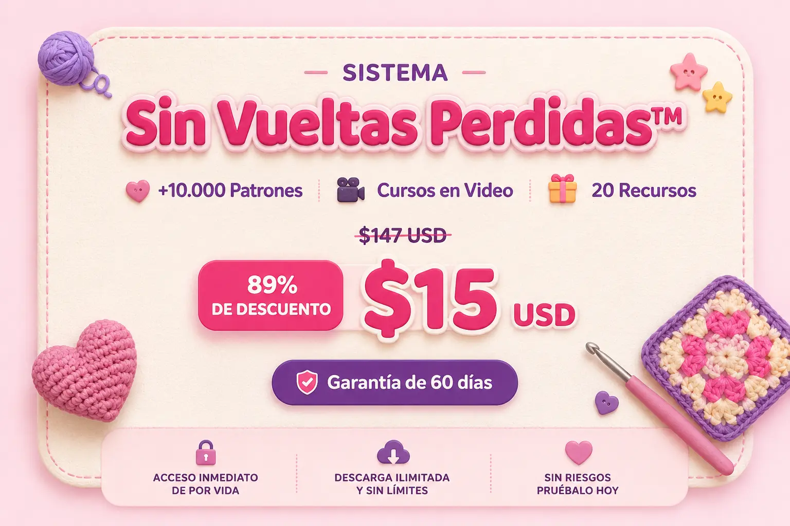
OFERTA SOLO POR HOY
Tu lugar estará reservado durante 15 minutos. En caso de no acceder, el descuento se cede a la siguiente persona en espera.
18 personas están viendo esta oferta ahora
🎁 Quiero el Sistema Sin Vueltas PerdidasPago único · sin suscripción · acceso inmediato por correo
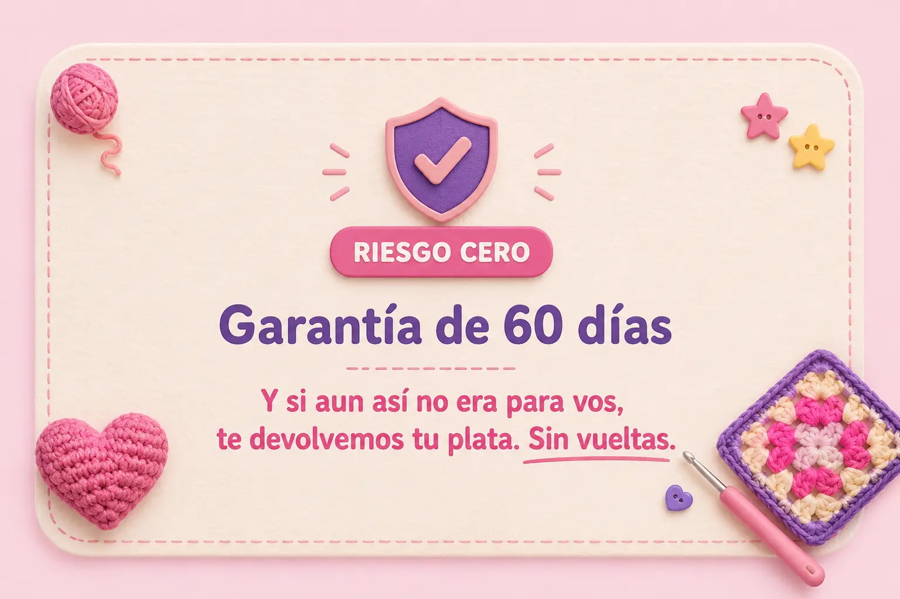
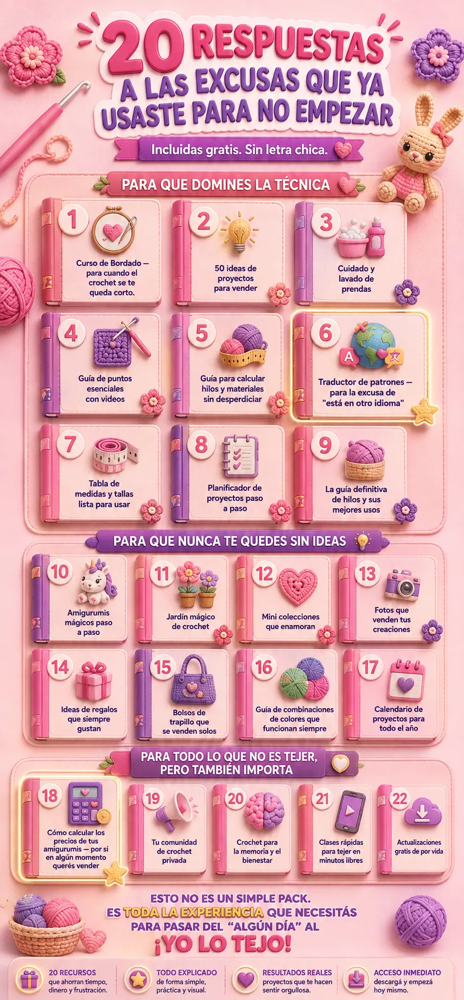
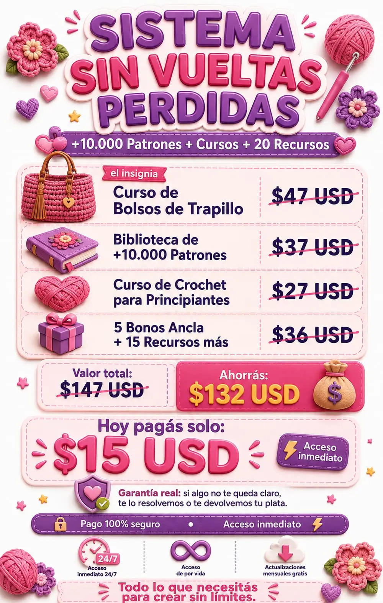
+ 20 recursos más — para que nunca te falte una excusa resuelta.
Lo que dicen quienes ya lo usan
Deslizá para ver más reseñas →
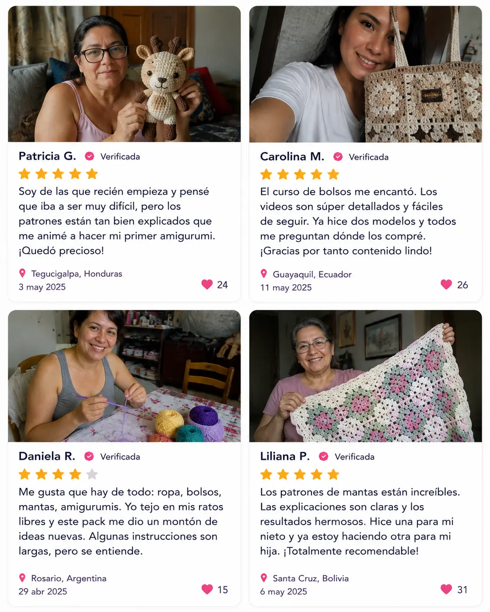
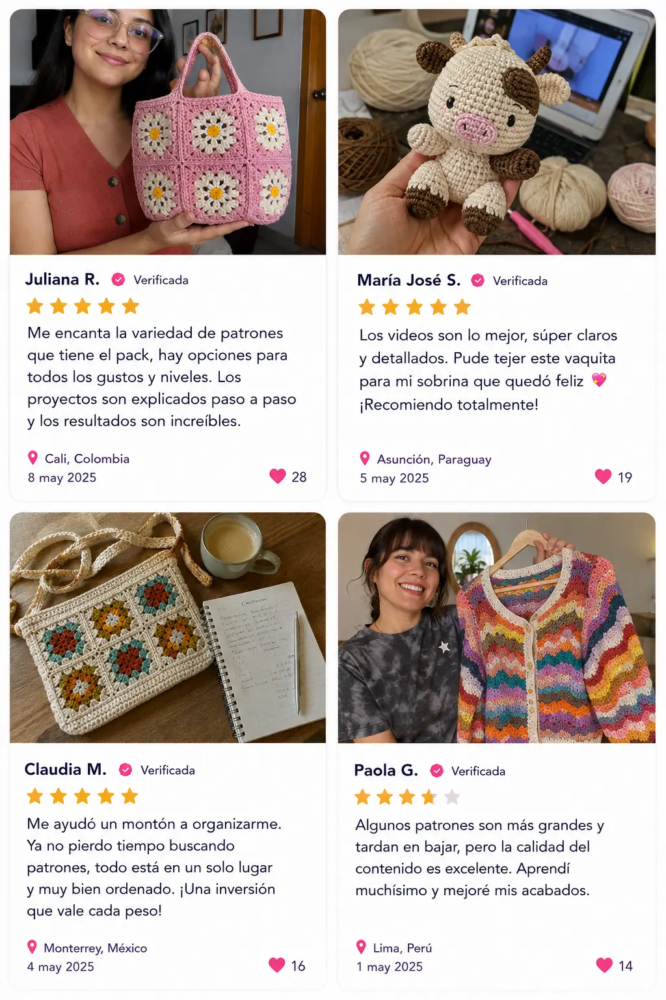
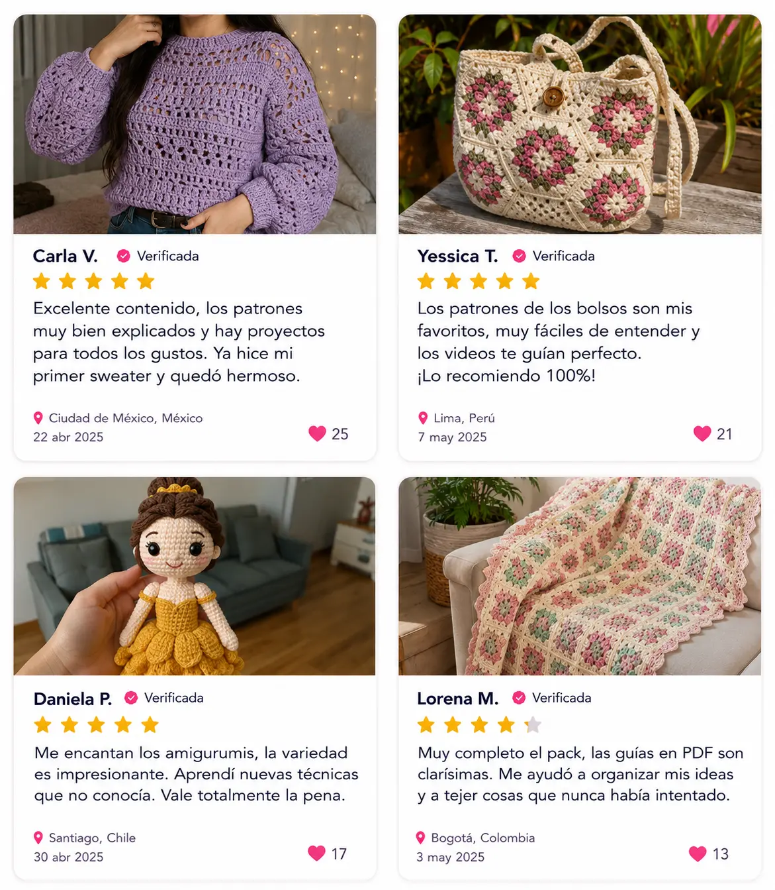
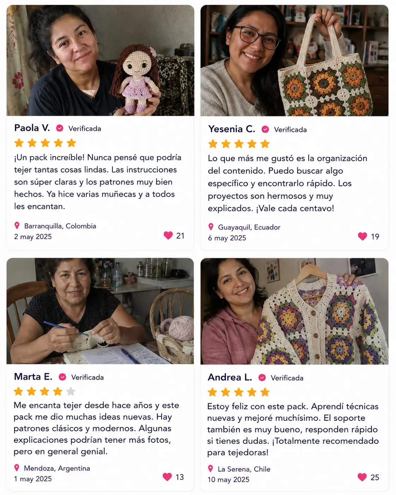
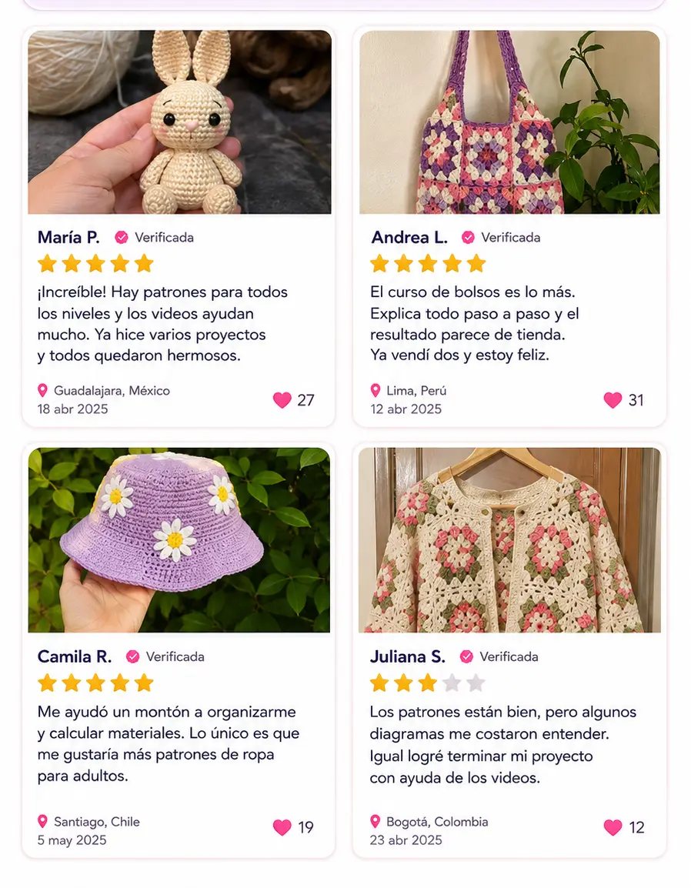
LO MÁS PREGUNTADO
Preguntas frecuentes
Resolvemos tus dudas antes de comprar — no después.
¿Qué incluye exactamente el Sistema Sin Vueltas Perdidas?
Más de 10.000 patrones organizados por lo que vos querés tejer, el curso insignia de Bolsos de Trapillo, el curso de Crochet para Principiantes, y los 20 recursos que resuelven las excusas más comunes para no empezar.
¿Sirve si nunca tejí?
Sí — de hecho está pensado primero para vos. El curso guiado arranca antes de lo básico, no asume que ya sabés nada.
¿Cómo recibo el producto después de comprar?
Acceso inmediato por correo electrónico después del pago. Entrás desde el celular, tablet o computadora, para siempre — sin esperar envíos.
¿Es pago único o suscripción?
Pago único. Sin suscripción, sin cobros al mes siguiente.
¿Tendré acceso de por vida?
Sí. Una vez que entrás, es tuyo para siempre, sin fechas ni límites.
¿Incluye actualizaciones?
Sí, sin costo extra. Esto no se queda estático — se actualiza solo, sin que vuelvas a pagar.
¿Puedo vender las piezas que haga?
Sí. Y por eso está el bono de cómo calcular precios — para el día que te pregunten "¿esto lo vendés?" y no te agarre sin saber qué responder.
Podés seguir buscando gratis…
o dejar de perder vueltas — las del ganchillo y las de las quince pestañas — y tener todo en un solo lugar, explicado para que realmente termines lo que empezás.
🎁 Quiero el Sistema Sin Vueltas Perdidas